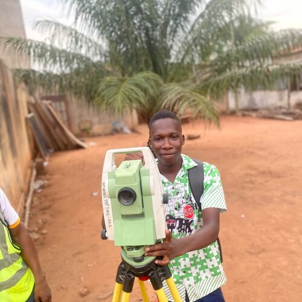
Akey Koffi
Clément
Opérateur Géomètre-Topographe
& Géographe SIG
Du levé de terrain à l'analyse spatiale : précision de mesure et lecture du territoire, au service de projets d'aménagement et de cartographie.
À propos de moi
Opérateur géomètre-topographe et titulaire d'une licence en géographie, je dispose d'une solide familiarisation avec les Systèmes d'Information Géographique (SIG) et l'analyse spatiale. Habitué aux travaux de terrain et aux outils DAO/SIG (QGIS, R, AutoCAD), j'ai construit une pratique qui allie précision technique et lecture du territoire.
Cette pratique de terrain, certifiée par l'Ordre des Géomètres du Togo (plans de bornage, calculs de superficie, implantations), s'articule avec des compétences géomatiques en analyse spatiale et visualisation de données.
Au-delà du cœur de métier, je construis en continu des compétences complémentaires : gestion de projet Agile, suivi-évaluation de projets de développement, sciences des données, conception de sites web efficaces et usage professionnel de l'IA. Cette polyvalence me permet d'aborder un projet géomatique dans son ensemble — de la collecte de la donnée jusqu'à sa restitution et sa gestion en mode projet.
En bref
Terrain certifiéSIG & analyse spatialeCartographieGestion de projetAutodidacteFR · EN · Éwé(Land Surveying Operator Certificate)
Institut Formatec
(Bachelor's Degree in Geography)
Université de Lomé
Intitulés conservés tels que délivrés.
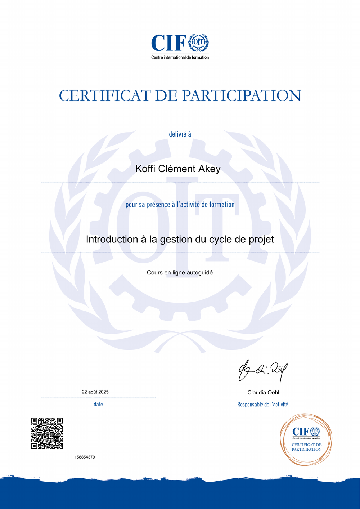
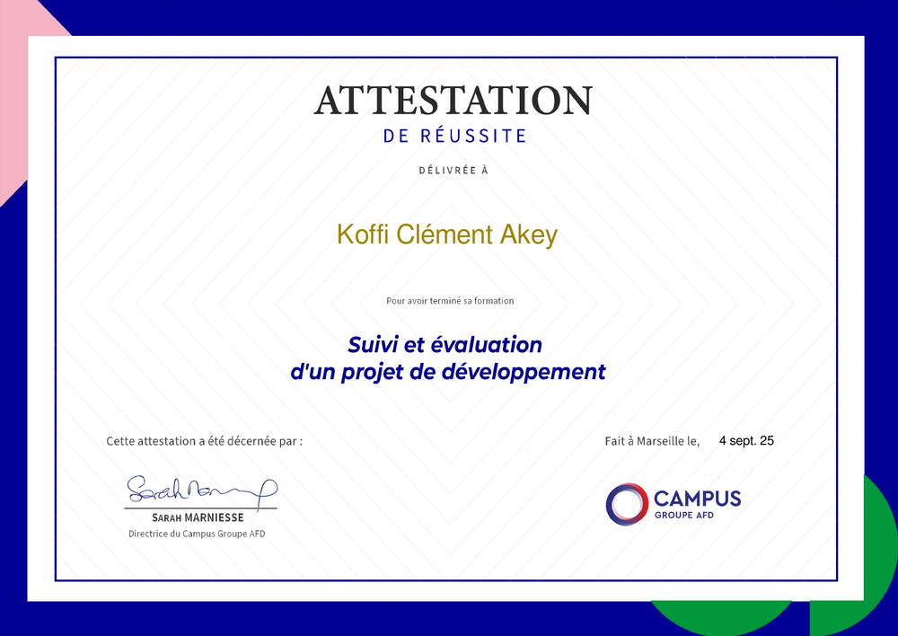
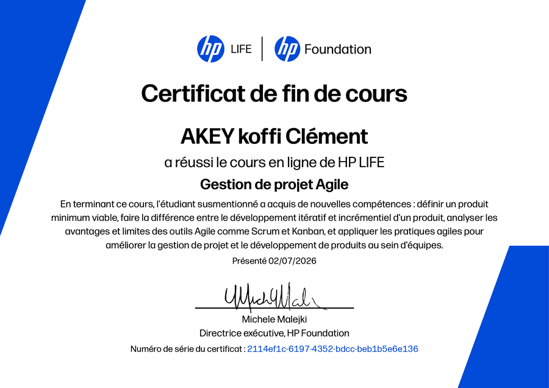
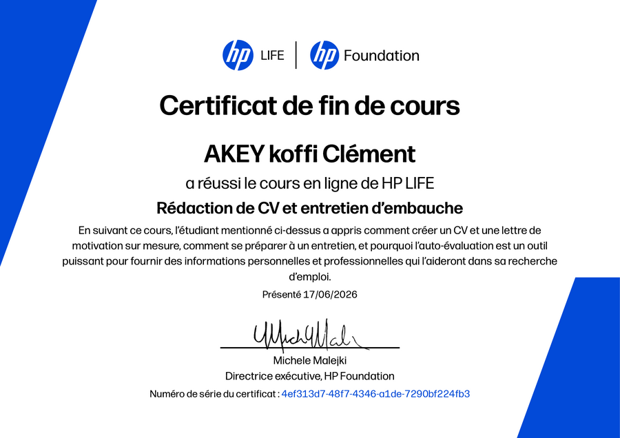
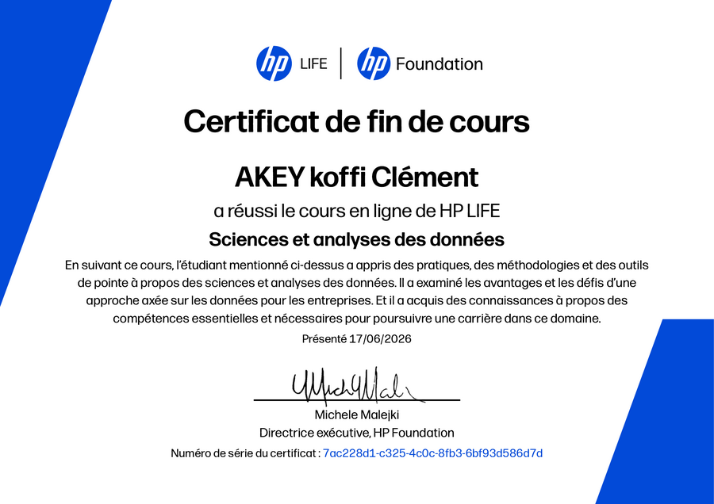
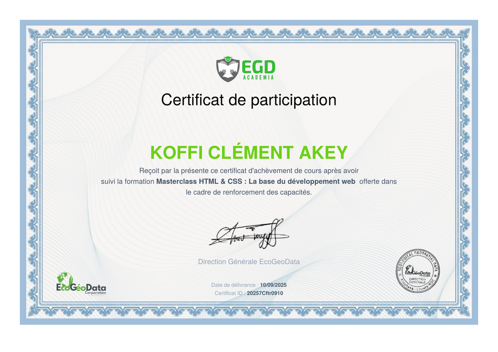
Compétences
Informatique & SIG
Terrain & gestion
Langues
Projets
Cartographie des points d'eau (PMH)
Analyse spatiale sous QGIS pour identifier les villages prioritaires sans accès à l'eau au sein de limites préfectorales hexagonales : zones tampons, intersection spatiale, et automatisation du traitement via le Modeleur graphique (Graphical Modeler).
Carte des pentes du terrain
Production d'une carte de pente à partir d'un modèle numérique de terrain (MNT), avec classification en degrés pour identifier les secteurs à forte déclivité — donnée clé pour l'analyse de risques et la planification de l'aménagement.

Analyse de la végétation (NDVI)
Calcul de l'indice de végétation par différence normalisée (NDVI) pour évaluer la densité et la vigueur du couvert végétal sur une zone d'étude, à partir d'imagerie satellite.

Centroïdes des préfectures du Togo
Génération des centroïdes des préfectures du Togo puis jointure spatiale avec une grille de référence, afin de dénombrer et localiser les préfectures par maille — exercice de manipulation de jointures et de géométries dérivées sous QGIS.
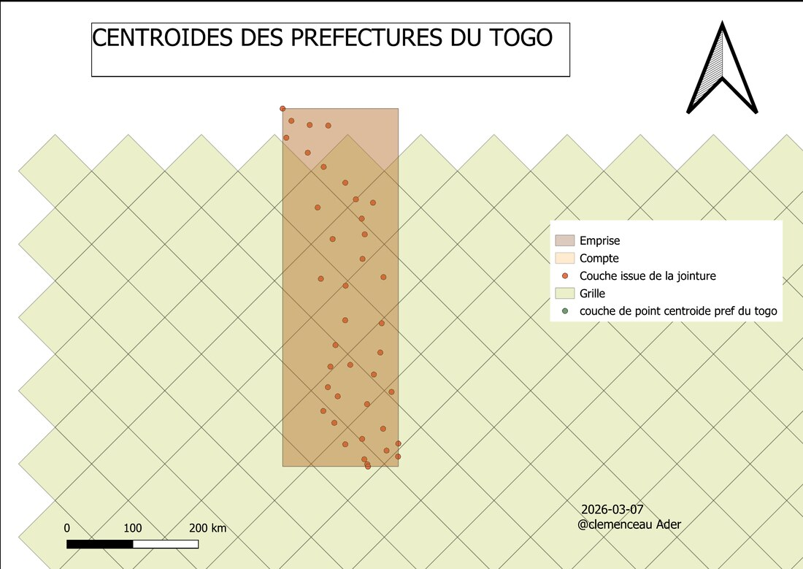
Carte de situation géographique — Lycée de Bè-Kpota
Réalisation d'une carte de situation géographique localisant le Lycée de Bè-Kpota (Lomé) dans son environnement urbain : réseau routier, zones bâties et repères de quartier. Habillage cartographique complet — légende, échelle, flèche du nord, grille de coordonnées (EPSG: 32631, WGS 84 / UTM zone 31N).

Carte des régions de France
Réalisation d'une carte de localisation mettant en évidence une région administrative (Île-de-France) au sein du découpage régional français — habillage complet : titre, échelle, orientation.

Carte des régions du Togo
Cartographie du découpage régional du Togo (Savanes, Kara, Centrale, Plateaux, Maritime), avec dégradé de teinte par région et habillage cartographique standard.

Carte de localisation — Anié
Carte de localisation de la commune d'Anié (région des Plateaux) avec zoom sur son découpage en cantons (Pallakoko, Kolokopé, Anié, Adogbénou, Atchinedji, Glitto), replacée dans le contexte national togolais.
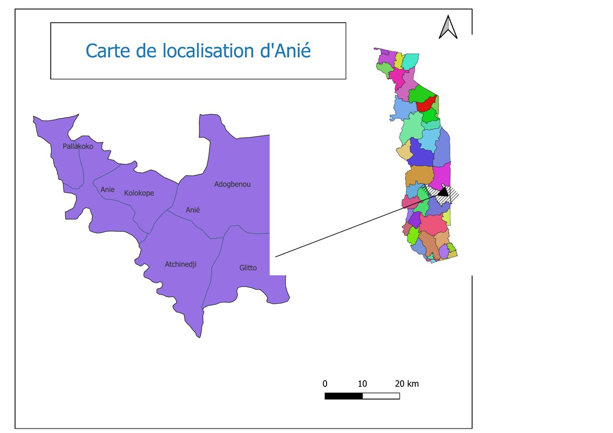
Carte de localisation — Sotouboua
Carte de localisation de la commune de Sotouboua (région Centrale) avec son découpage en cantons (Aouda, Fazao, Adjengéré, Kaniamboua, Titigbé, Sessaro, Tabindé, Bodjondé, Tchébébé, Kazaboua) et carton de situation dans le Togo.
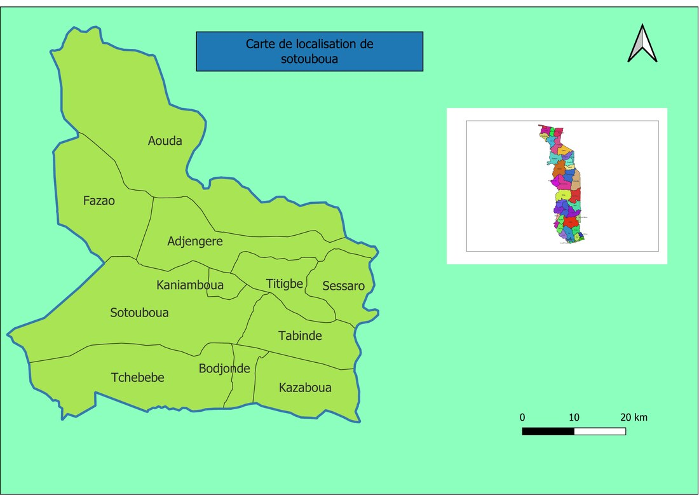
Carte du campus de l'Université de Lomé
Carte de référence du campus universitaire de Lomé, mobilisant des données OpenStreetMap : bâtiments, infrastructures et points d'intérêt du campus.
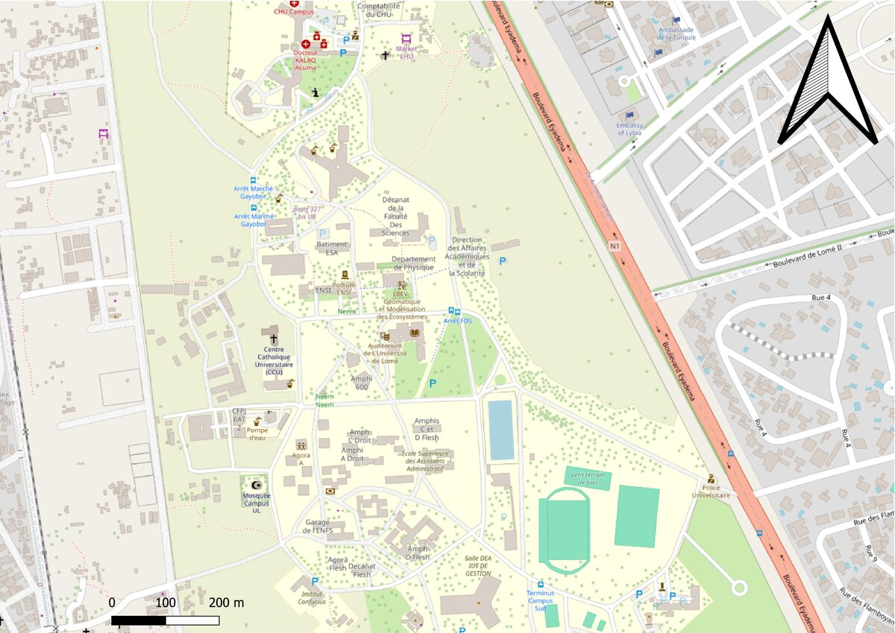
Plan de terrain (bornage)
Établissement d'un plan de terrain au 1/1000 conforme aux normes de l'Ordre des Géomètres du Togo : coordonnées de bornage (système local), mesures d'implantation, orientation et plan de situation. Informations personnelles masquées pour la publication.
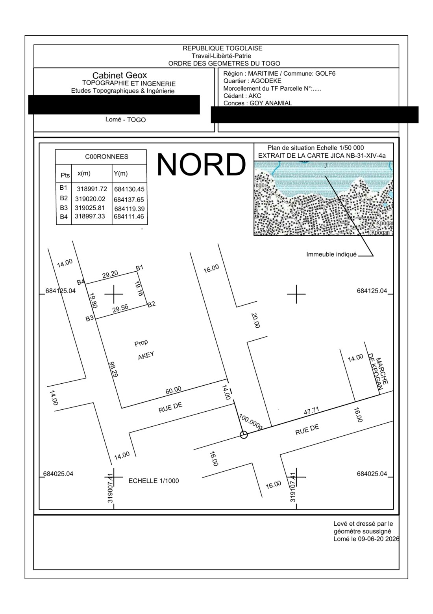
Plan de terrain — Tabligbo
Plan de terrain au 1/50 000 dans le canton de Tabligbo (préfecture de Yoto) : bornage, calcul de surface, extrait de carte JICA pour la mise en situation. Informations personnelles masquées pour la publication.
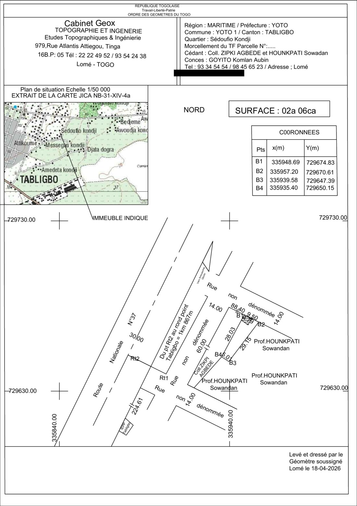
Plan de terrain — Baguida
Levé et calcul d'un plan de terrain dans le canton de Baguida (Golfe 6) : détermination des coordonnées de bornage, calcul de superficie (1202,38 m²), dressé et signé en tant que topographe. Informations personnelles masquées pour la publication.
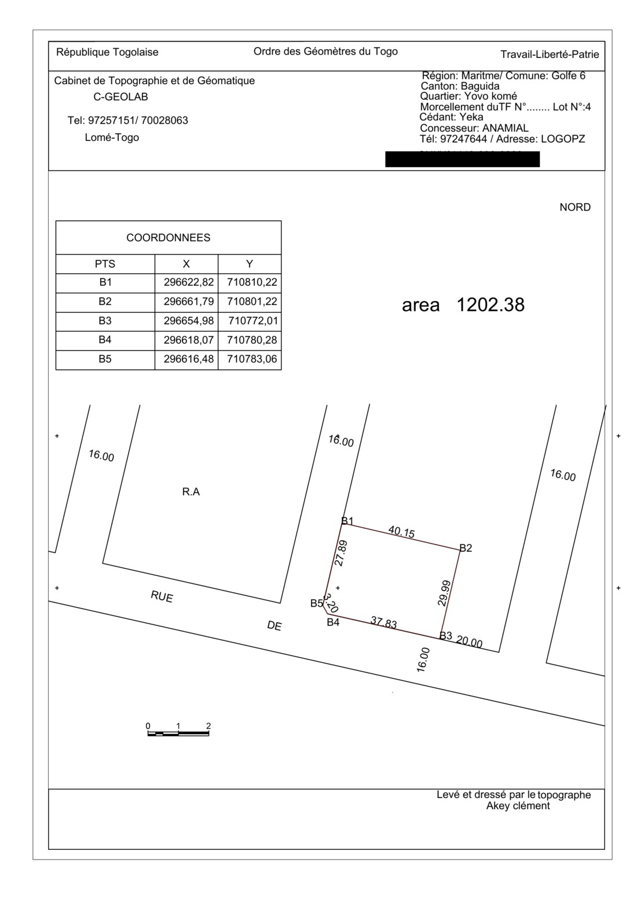
D'autres projets seront ajoutés prochainement — levés topographiques, implantations, missions terrain.
Contact
+228 97 25 71 51 / 70 02 80 63
Téléphone
clementakey@gmail.com
Agoè Plateau, Lomé — Togo
Localisation
Ouvert aux échanges et opportunités professionnelles